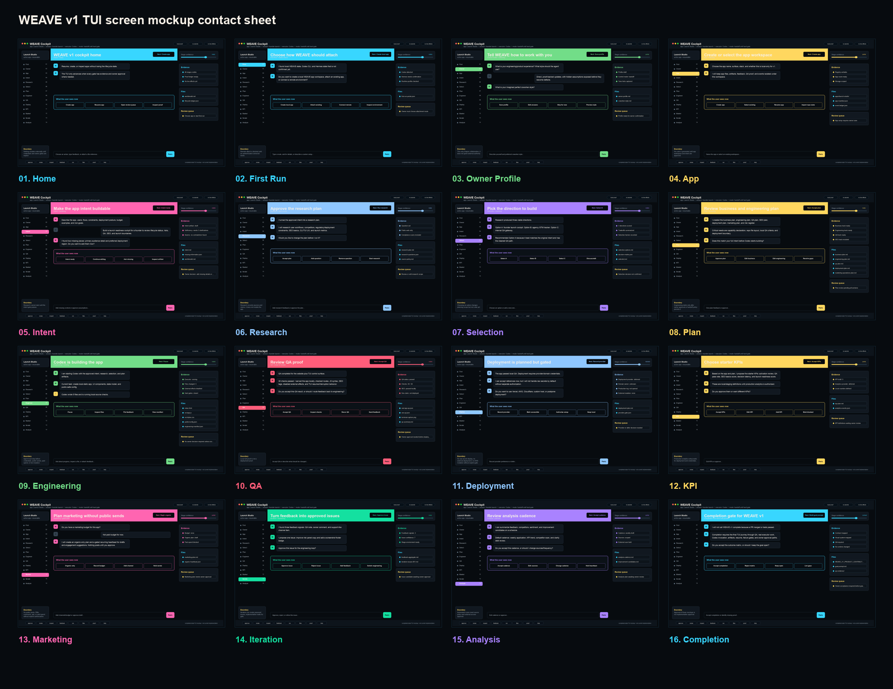
01 / 16Homeready
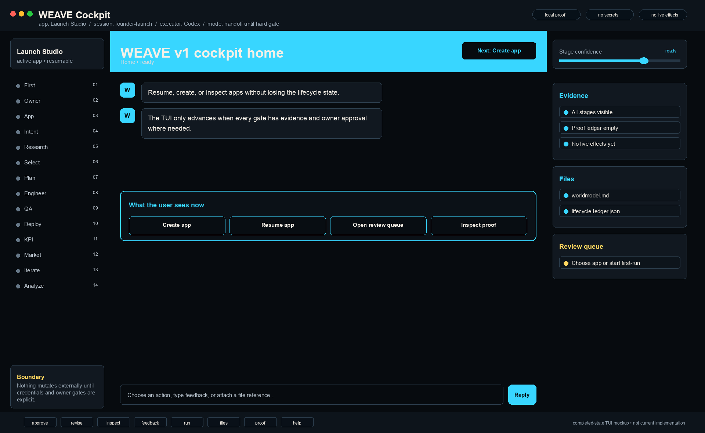
02 / 16First Runneeds choice
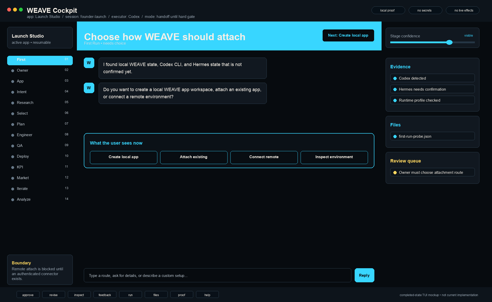
03 / 16Owner Profilecollecting
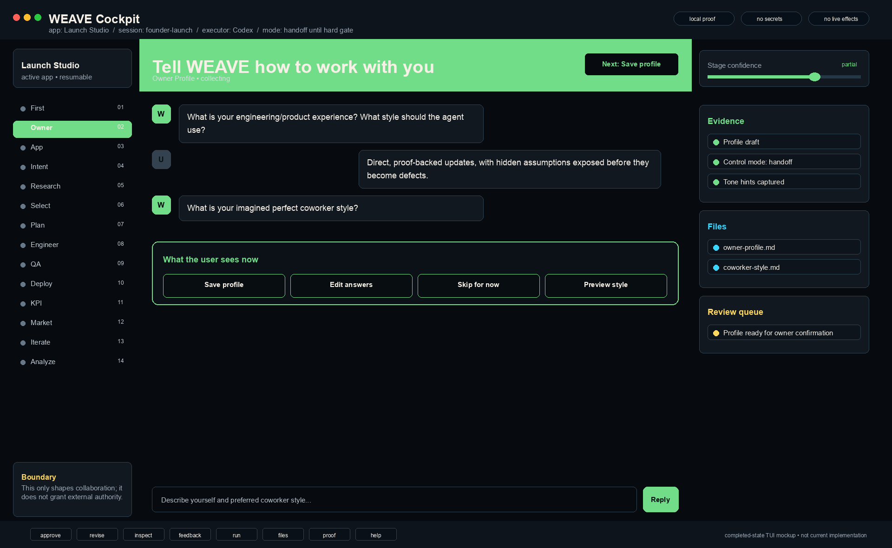
04 / 16Appselecting
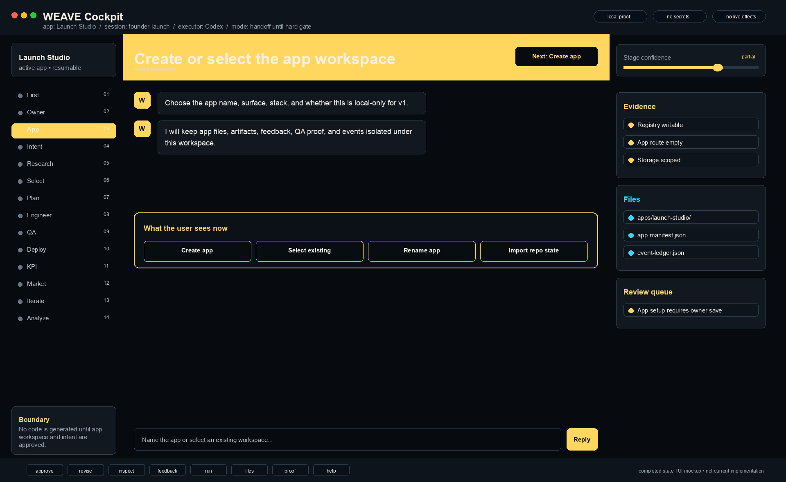
05 / 16Intentvalidating
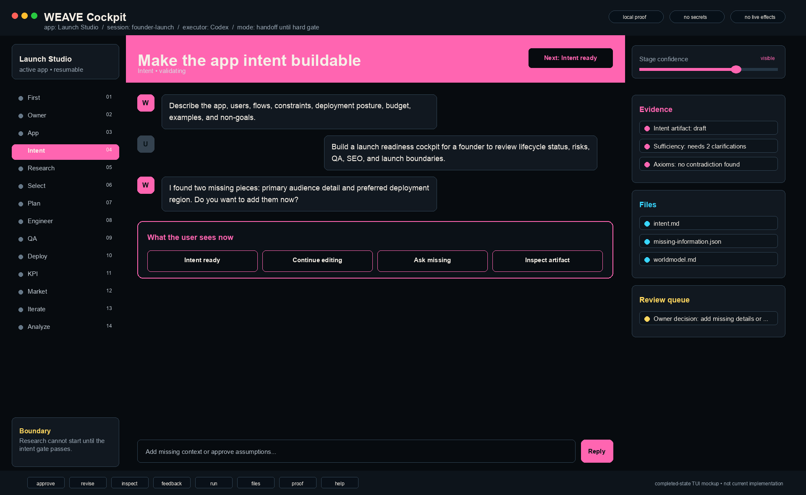
06 / 16Researchplan review
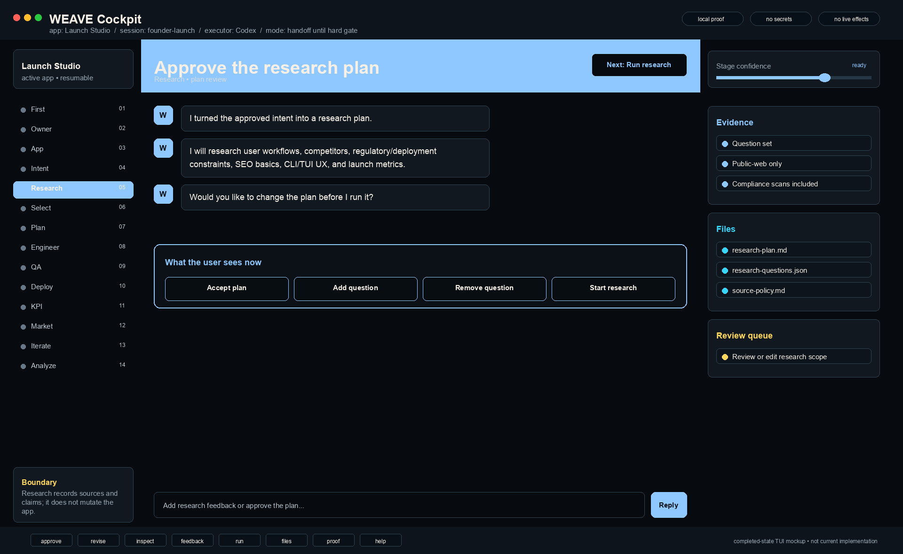
07 / 16Selectionchoosing
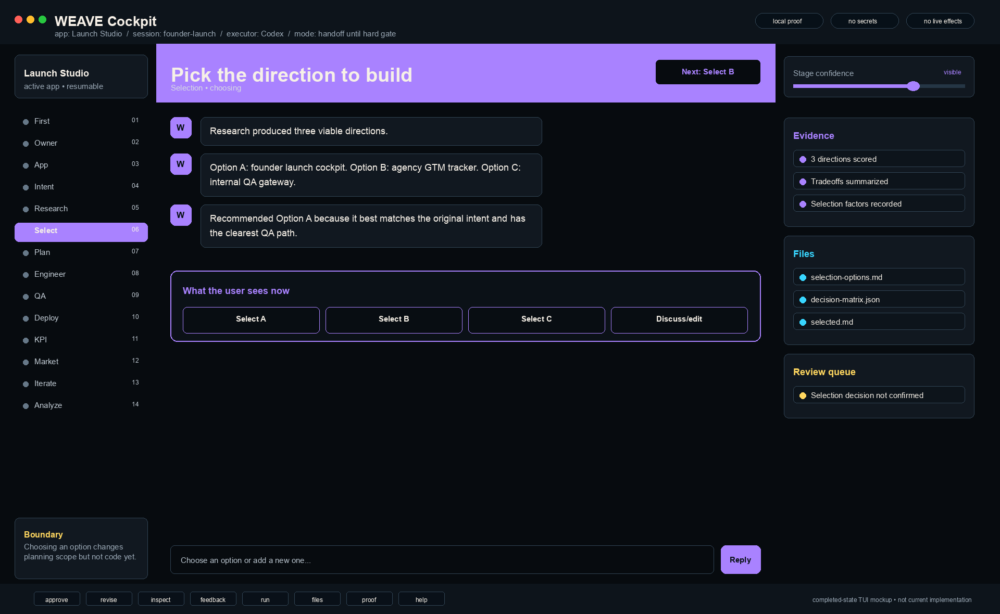
08 / 16Planreviewing
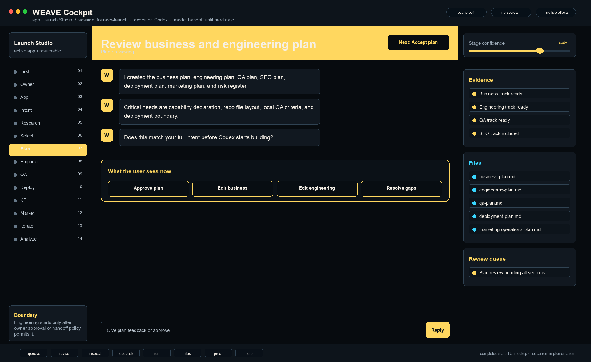
09 / 16Engineeringrunning
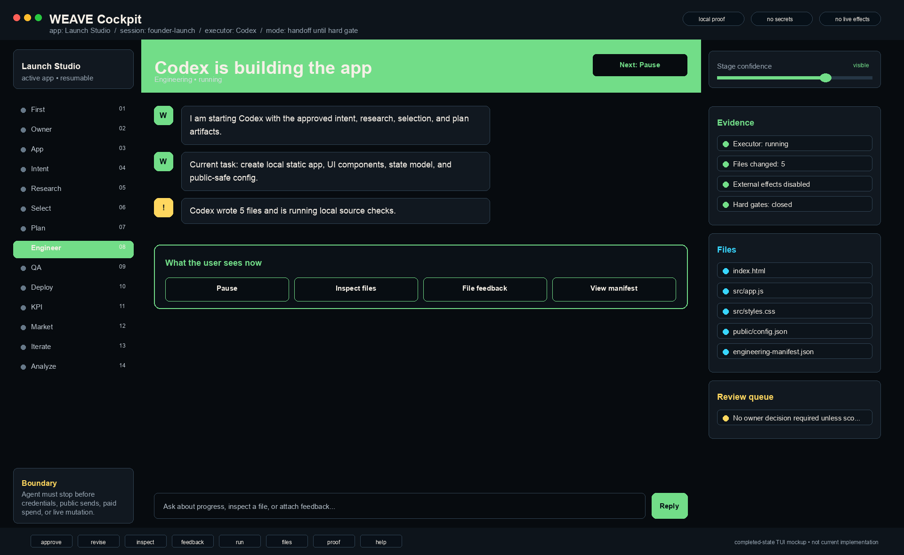
10 / 16QAready for review
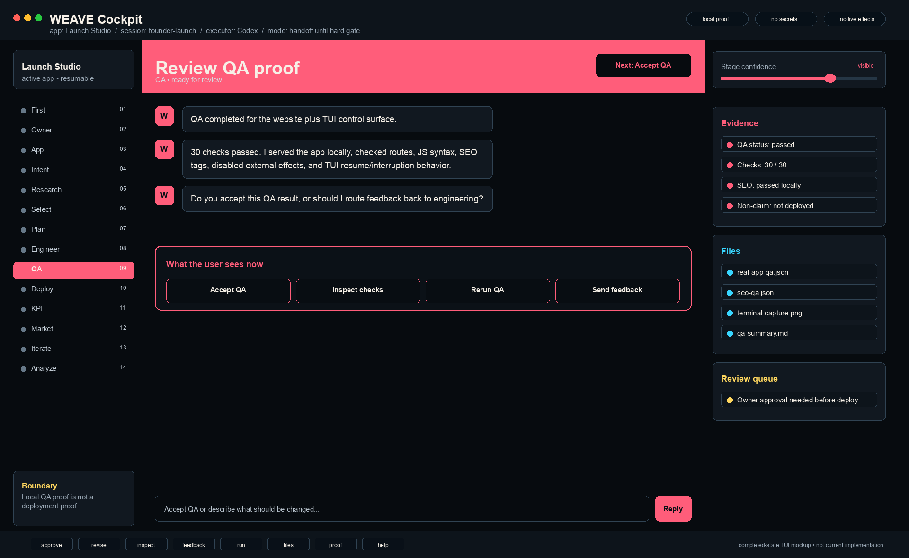
11 / 16Deploymentblocked
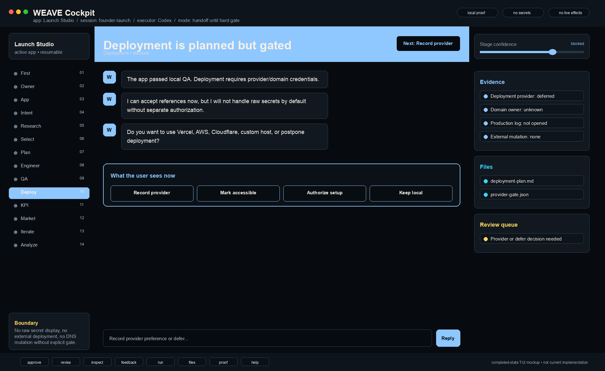
12 / 16KPIdraft
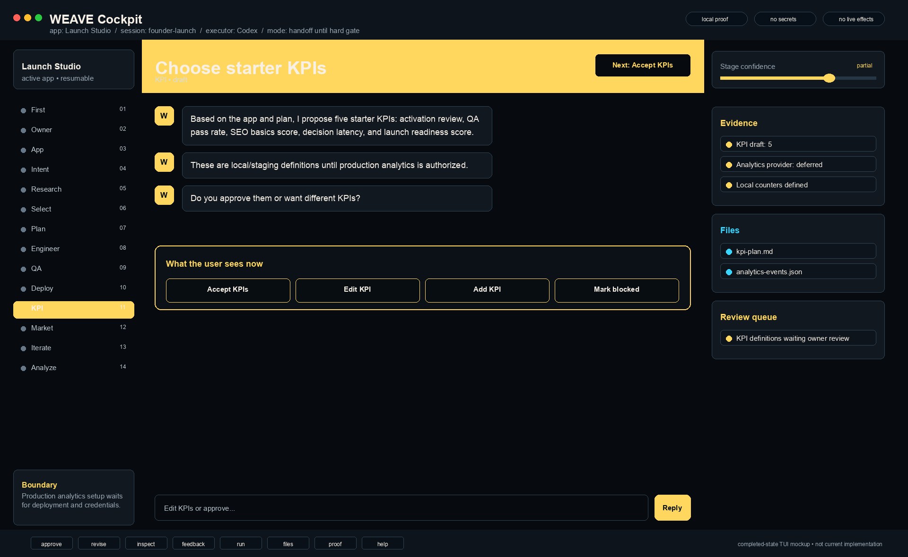
13 / 16Marketinggated plan
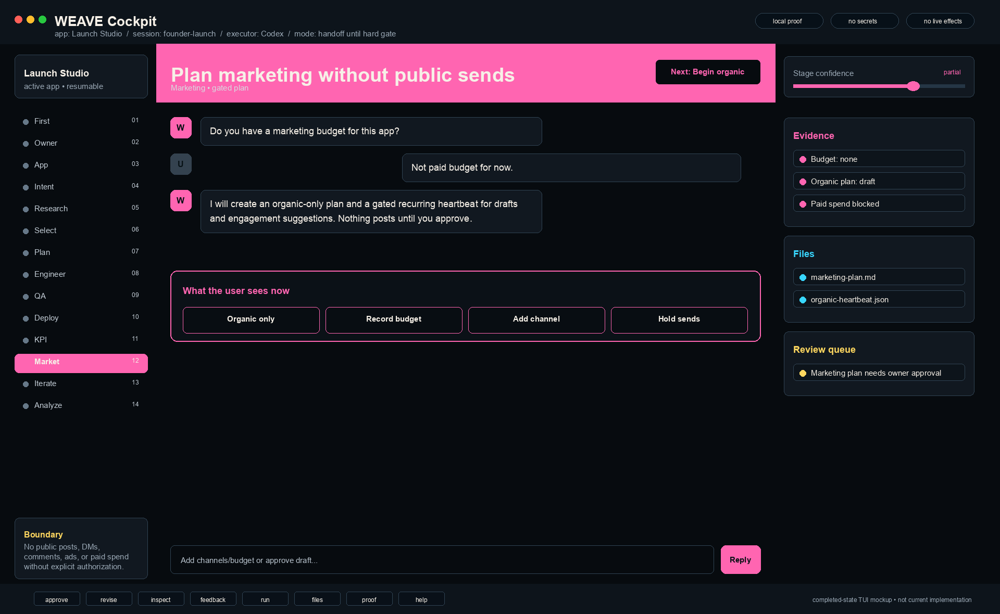
14 / 16Iterationmonitoring
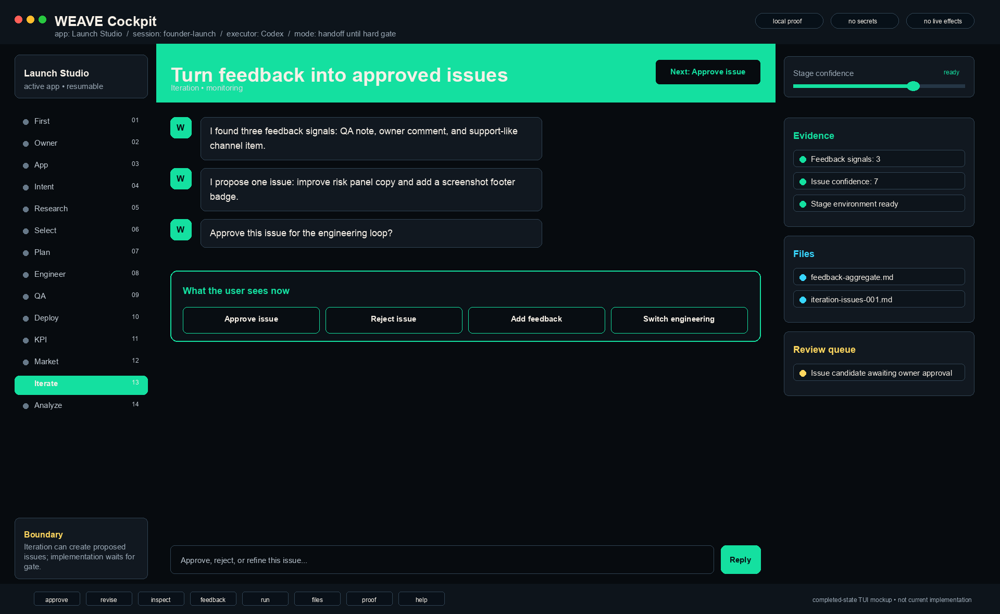
15 / 16Analysisplanned
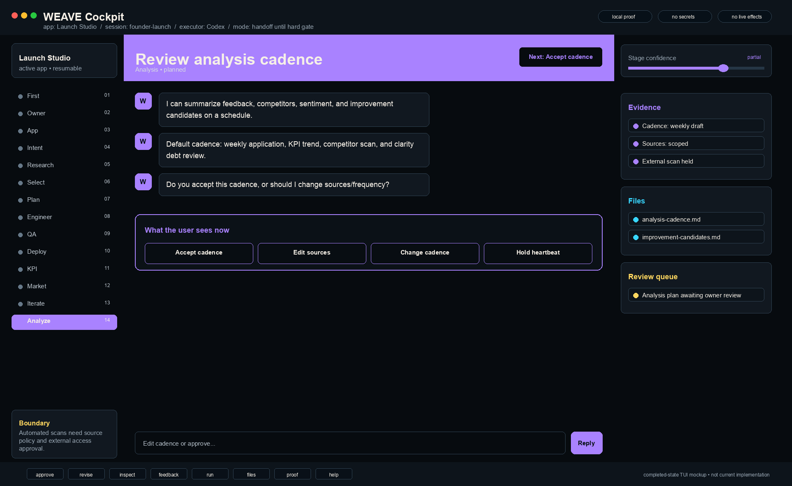
16 / 16Completionnot done until proven
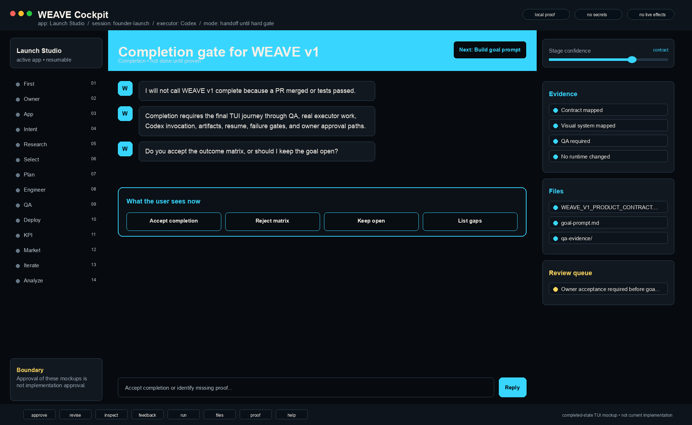